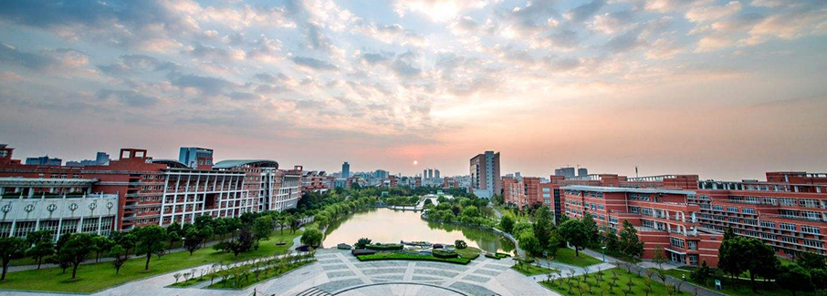

 探寻时代更迭中的名校校名沿革
从1895年天津北洋西学学堂的诞生，到民国时代的“十三所国立大学”；从1952年新中国成立后的院系调整，再到20世纪末的“985”“211”和今天的“双一流”。
中国各大名校校名在时代更迭中几经更变。
通过下方对于民国时代资深国立大学的更名史的梳理，
我们可以看到西方教会、进步民主人士、北洋政府、国民政府以及新中国政权在中国近代高校发展历史上所起到的作用。
观看提示：请向右拖动下表查看完整内容